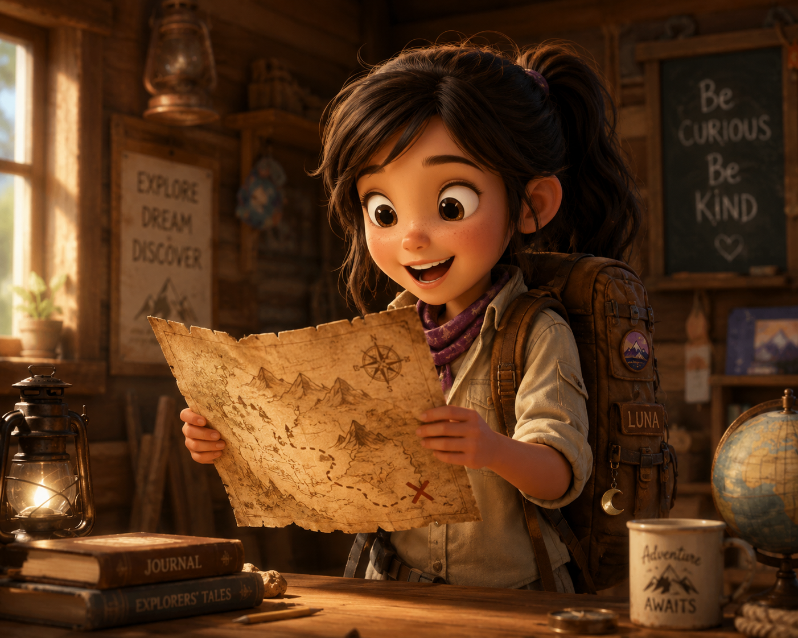
Em uma vila cercada por montanhas, a jovem exploradora Luna encontrou um mapa antigo escondido em um livro empoeirado que mostrava o caminho para um tesouro no coração da floresta. Por onde Luna deve começar a busca?
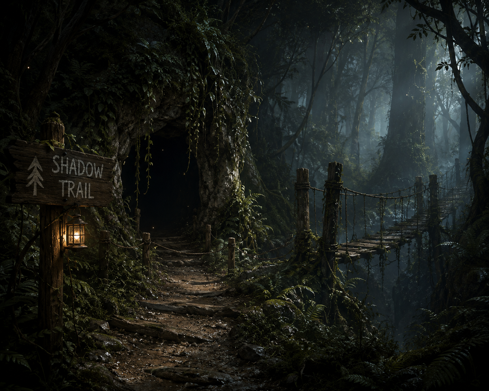
A Trilha das Sombras é densa e escura. À frente, Luna se depara com uma bifurcação antiga: uma caverna coberta de trepadeiras e uma ponte de cordas velha.
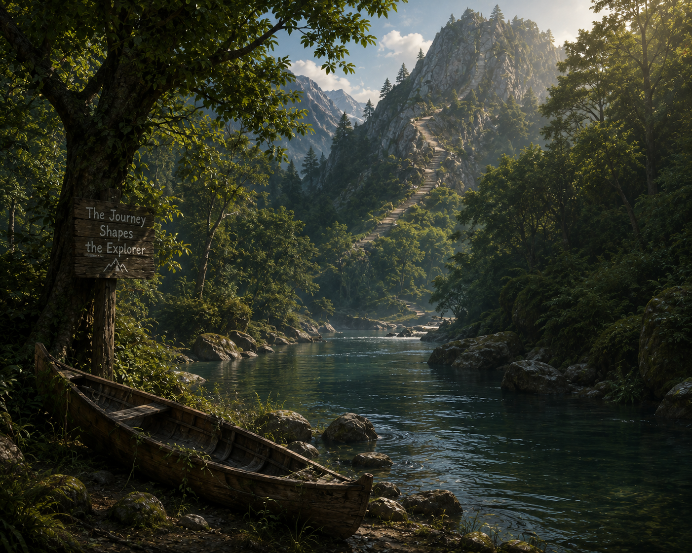
Seguindo o Rio Silencioso, a correnteza começa a ficar muito forte. Luna avista uma canoa abandonada na margem e, um pouco mais adiante, uma trilha que sobe a montanha.
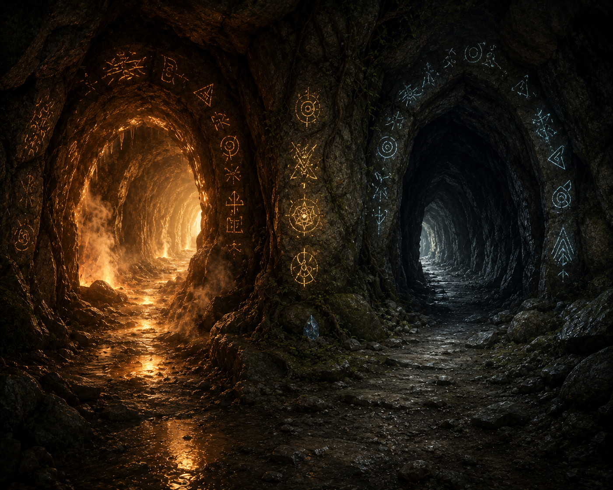
Dentro da caverna, Luna encontra inscrições brilhantes na parede e dois túneis: um que exala um vento quente e outro completamente silencioso.
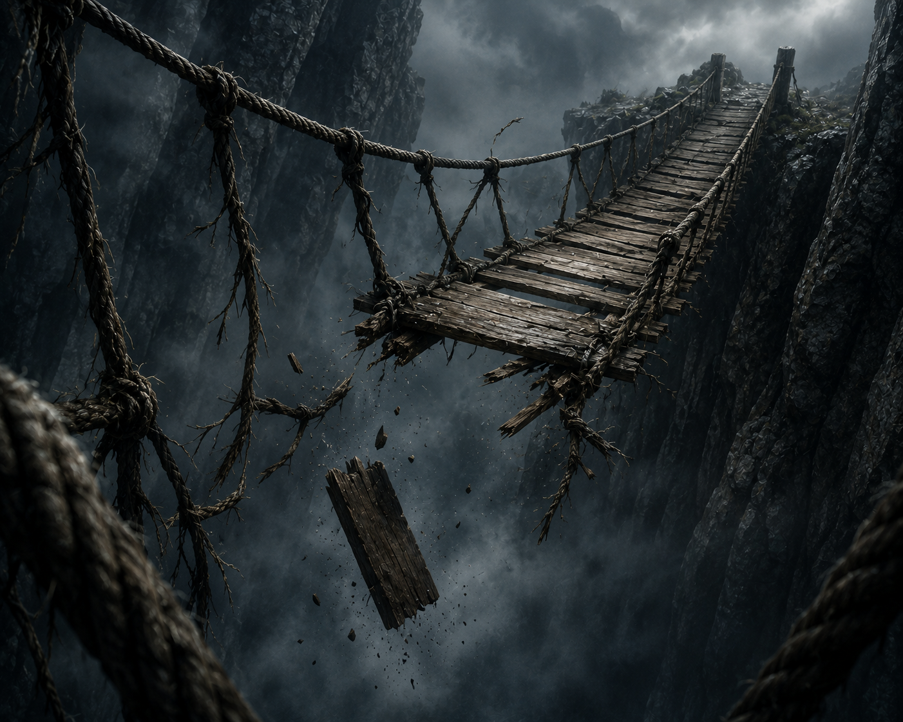
A ponte de cordas não aguentou o peso e uma das cordas se rompeu! Luna conseguiu se segurar, mas perdeu o mapa no abismo. Sem o mapa, ela teve que voltar.
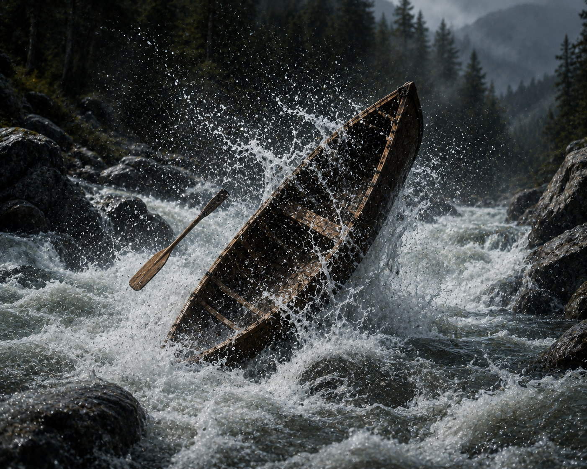
A força das águas virou a canoa! Luna nadou em segurança para a margem, mas está exausta e assustada demais para continuar hoje.
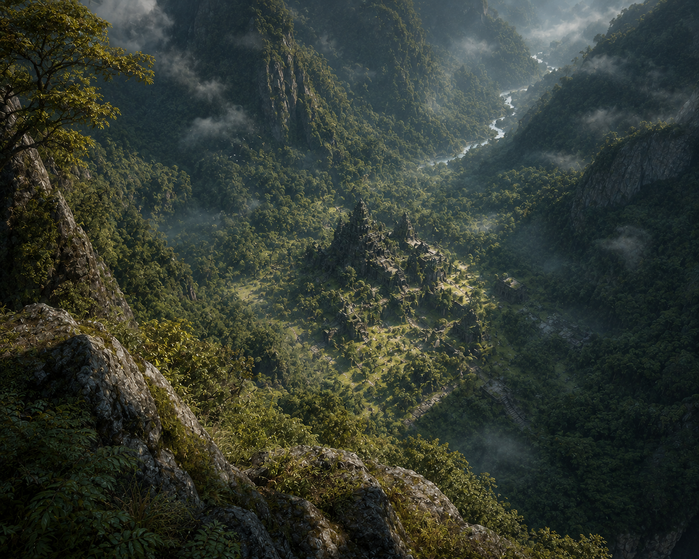
Lá do alto da montanha, Luna tem uma visão privilegiada da floresta e localiza um templo antigo escondido no vale abaixo. Existem duas descidas possíveis.
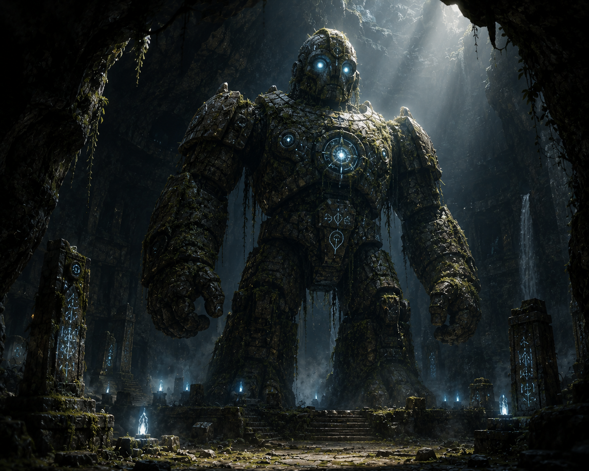
O túnel quente levou Luna até a câmara de um Guardião de Pedra mecânico. Para passar, ela precisa responder a um enigma ou oferecer um item.
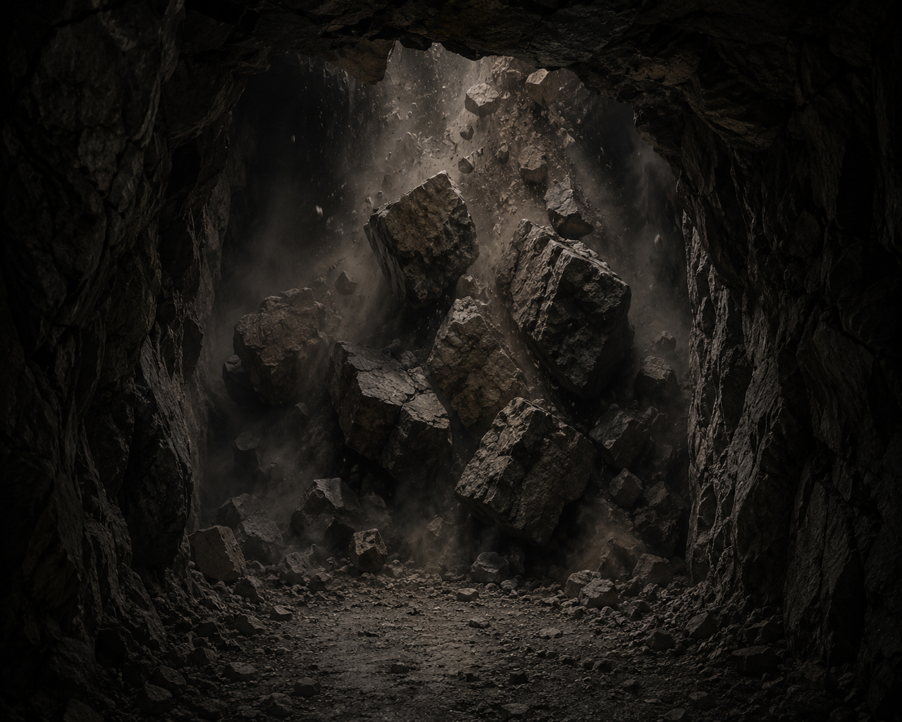
O túnel silencioso era uma armadilha sem saída e o teto começou a desabar! Luna correu de volta a tempo, mas a entrada foi bloqueada.
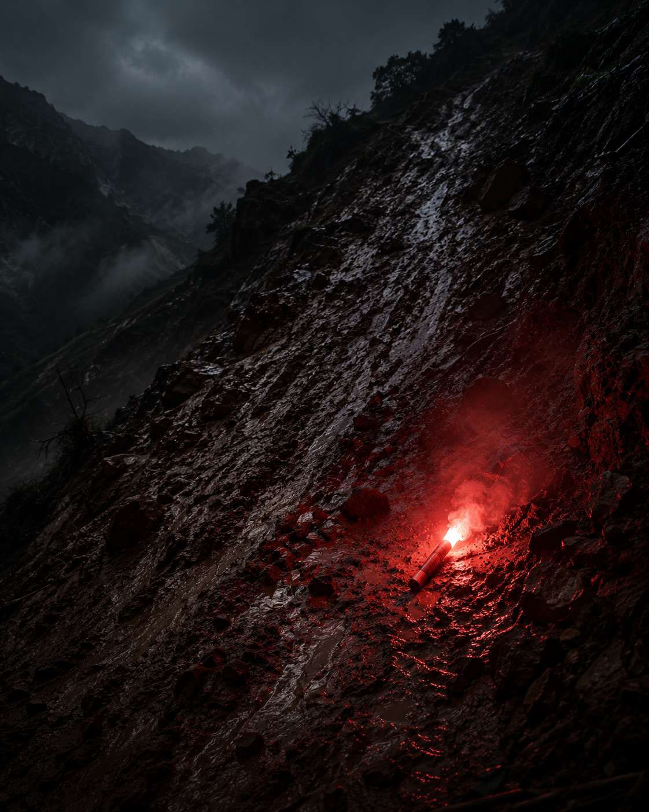
A encosta era lisa demais. Luna escorregou e machucou o tornozelo. Sem condições de andar, ela usou seu sinalizador para pedir resgate.
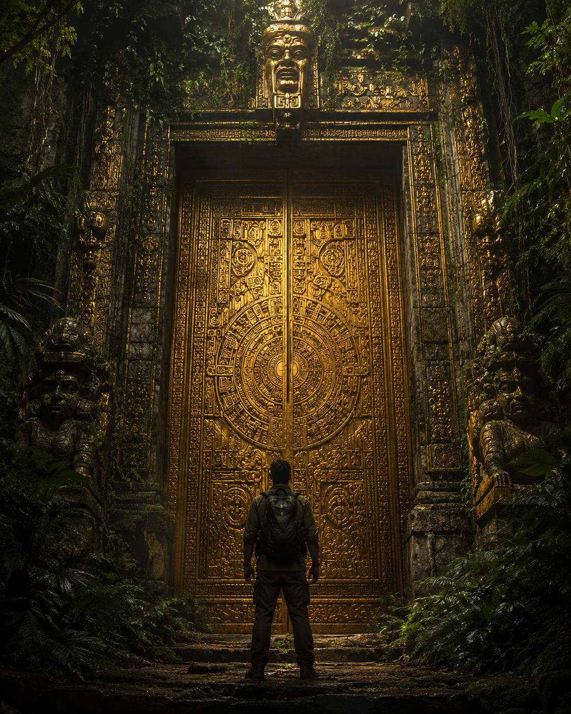
O contorno do penhasco foi seguro. Luna chegou direto aos portões do Templo Perdido, ficando cara a cara com a grande porta de ouro.
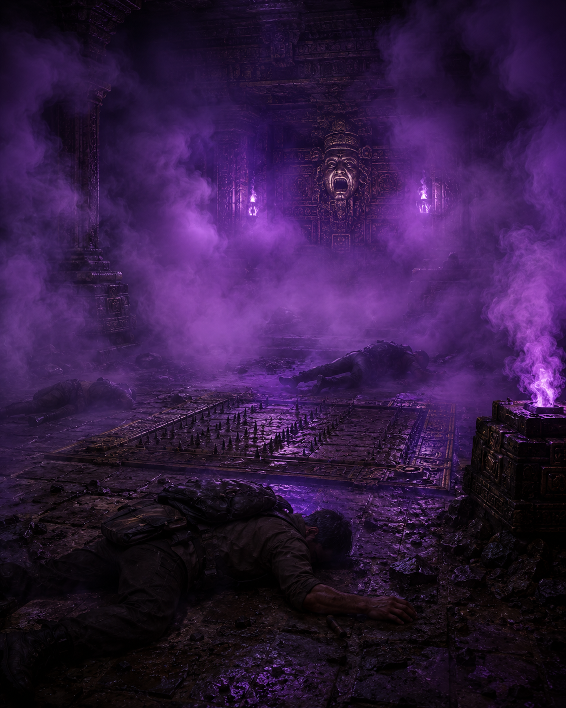
Luna errou a resposta do enigma (ou a fechadura prendeu sua mão). Uma armadilha de fumaça do sono foi ativada e ela acordou de volta na sua vila, sem o tesouro.
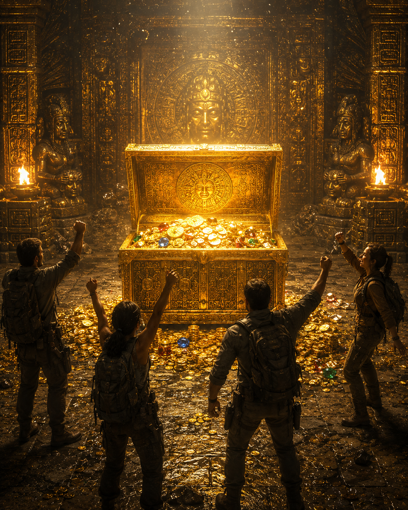
🏆 PARABÉNS! O amuleto antigo se encaixou perfeitamente (ou as portas cederam). A sala se iluminou revelando o lendário Tesouro da Floresta Perdida! Luna agora é a maior exploradora da história!